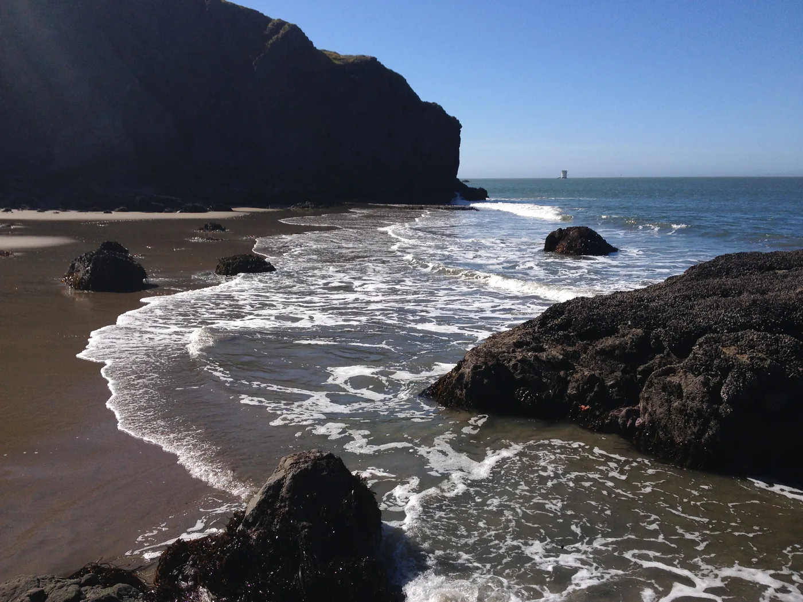
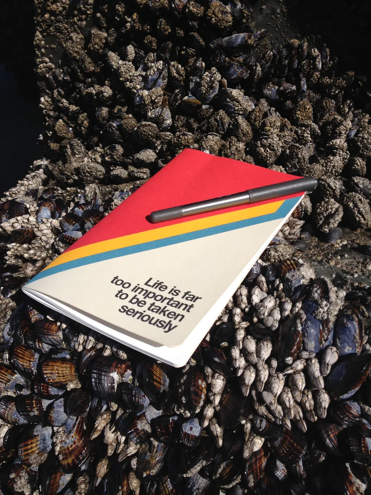
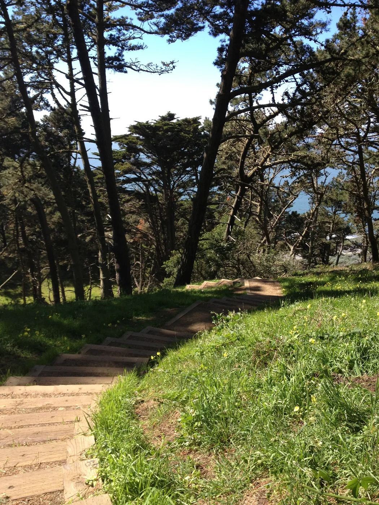
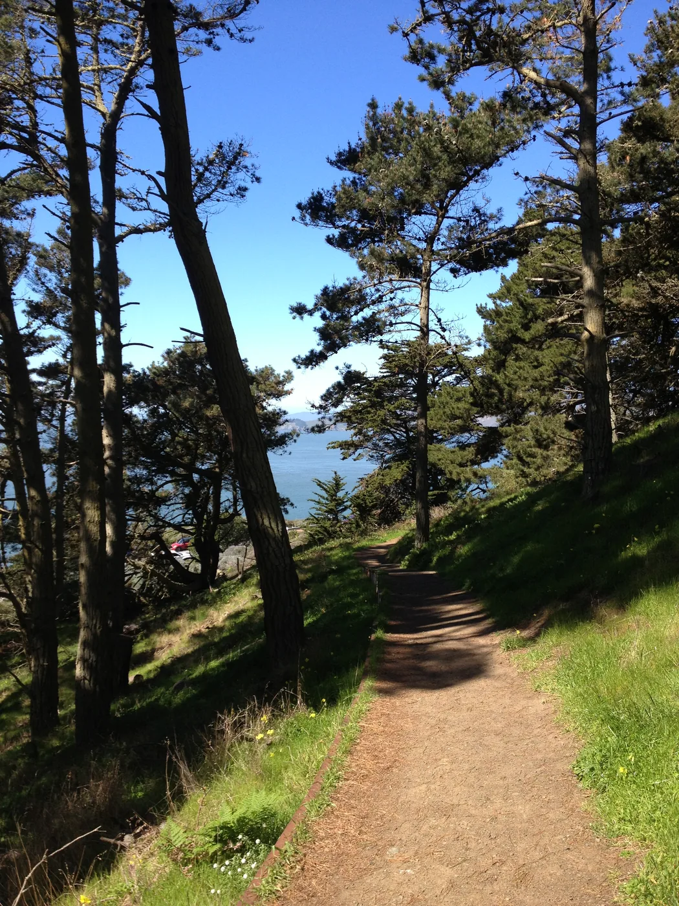
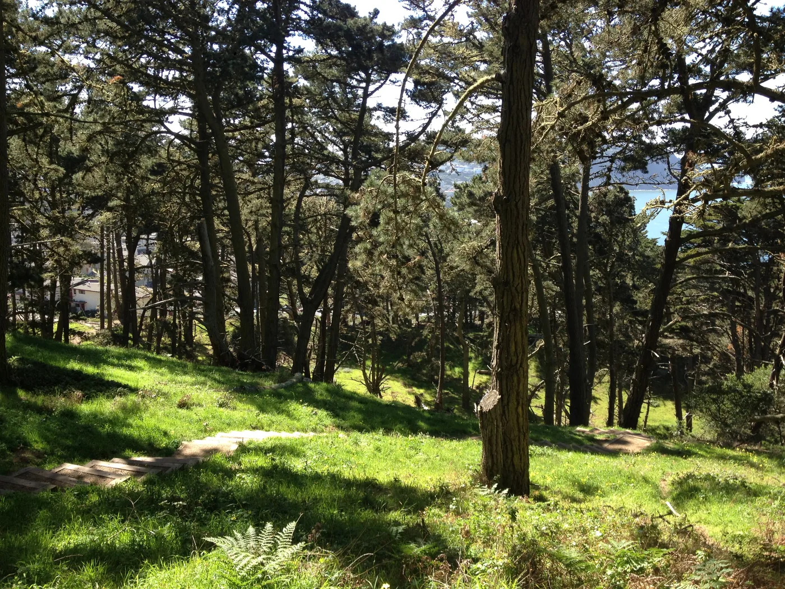
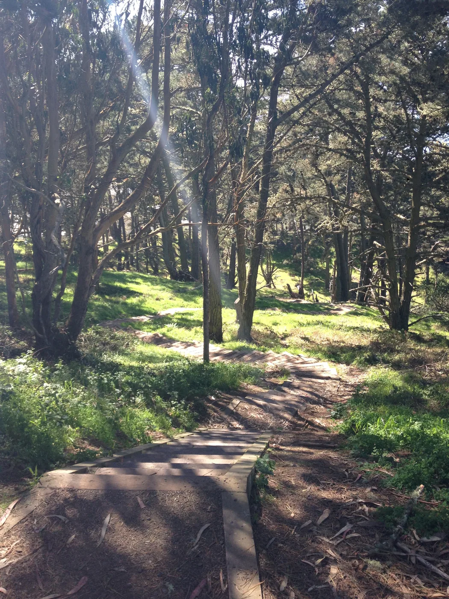

Blog · March 15, 2013
If you sort iPhone photos by size, which images come out on top?
I just got back from a post-TED trip to San Francisco. After importing my SF shots and sorting by size to pull out videos (for a coming-soon time lapse project), I noticed an interesting trend in my photos: the largest ones are taken outside.
Here are the 10 largest pics, ranging from 4.6 MB (green, center) to 3.2 MB (face of curiosity, bottom). Average size images range from 2-2.6 MB. What attributes describe the outliers? Nature. And a bit of art. Try this and share your mobile pics hungriest for data!
 Street Art in the mission
Street Art in the mission
 Golden Gate from China Beach
Golden Gate from China Beach
 Presidio Path
Presidio Path
 Notebook by the sea
Notebook by the sea
 Presidio path to the sea
Presidio path to the sea
 Presidio
Presidio
 Presidio
Presidio
 China Beach
China Beach
 Music, art and exploration
Music, art and exploration
 Curiosity
Curiosity
     
First published on my old blog, amyrobinson.wordpress.com, March 15, 2013.